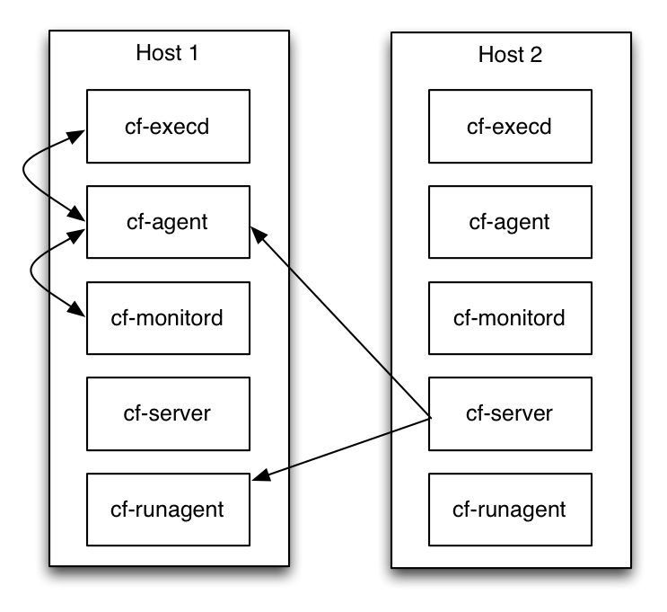

The Complete Overview
Table of Content
- What is CFEngine and why?
- How CFEngine works
- CFEngine directory structure
- Client server communication
- Glossary
CFEngine is a distributed system for managing and monitoring computers across an IT network. Machines on the network that have CFEngine installed, and have registered themselves with a policy server (see Installation), will each be running a set of CFEngine component applications that manage and interpret textual files called policies. Policy files themselves contain sets of instructions to ensure machines on the network are in full compliance with a defined state. At the atomic level are sets, or bundles, of what are known in the CFEngine world as Promises. Promises are at the heart of Promise Theory, which is in turn what CFEngine is all about.
Policy language and compliance
For many users, CFEngine is simply a configuration tool - i.e. software for deploying and patching systems according to a policy. Policy is described using promises. Every statement in CFEngine 3 is a promise to be kept at some time or location. More than this, however, CFEngine is not like other automation tools that "roll out" an image of some software once and hope for the best. Every promise that you make in CFEngine is continuously verified and maintained. It is not a one-off operation, but a self-repairing process should anything deviate from the policy.
CFEngine ensures that the actual state of a system is in compliance with the predefined model of desired state for the system. If it is not in compliance CFEngine will bring it into compliance. This is known as convergence.
That model is represented by one or more policies that have been written using the declarative CFEngine policy language. The policy language has been designed with a vocabulary that is intuitive, yet at the same time can still support the design of highly complex IT systems.
Those policies are distributed across all hosts within the system via download from the policy server. Every host will then interpret and execute each of the instructions it has been given in a predetermined order.
CFEngine continually monitors all of the hosts in real-time, and should the system's current state begin to drift away from the intended state then CFEngine will automatically take corrective action to bring everything back into compliance.
See also: Language concepts, Writing and serving policy
CFEngine policy servers and hosts
There are basically two categories of machines in a CFEngine environment: policy servers and their client hosts. Policy servers are responsible for making policy files available to each of the client hosts that have registered with it (a.k.a. bootstrapped), including itself. Hosts on the other hand are responsible for ensuring they continuously pull in the latest policies, or changes to policies, from the policy server. They are additionally responsible for ensuring they remain fully compliant with the instructions contained within the policy files, at all times.
The role of a particular machine where CFEngine is deployed determines which of the components will be installed and running at any given moment.
See also: Writing and serving policy
CFEngine component applications and daemons
There are a number of components in CFEngine, with each component performing a unique function: components responsible for implementing promises, components responsible for organizing large networks of agents, and other components responsible for providing the infrastructure of CFEngine.
These components form the basis of automation with CFEngine. They are independent software agents running on the various systems that make up your infrastructure. They communicate with one another as shown in the following figure, using a protocol that allows each host to distribute promises, act upon them, and report status to a central server.
All CFEngine software components exist in /var/cfengine/bin.

Daemons
All machines, whether they are policy servers or hosts, will have these three important daemons running at all times:
cf-execd
cf-execd is the scheduling daemon for cf-agent, similar to cron. It executes and collects the output of cf-agent and
e-mails any output to the configured e-mail address.
cf-execd runs cf-agent locally according to a schedule specified in policy code (executor control body). After a cf-agent run is completed, cf-execd gathers output from cf-agent, and may be configured to email the output to a specified address. It may also be configured to splay (randomize) the execution schedule to prevent synchronized cf-agent runs across a network.
cf-execd keeps the promises made in common bundles, and is affected by common and executor control bodies.
See also: cf-execd reference documentation.
cf-serverd
cf-serverd is a socket listening daemon providing two services: it acts as a file server for remote file copying and it allows an authorized cf-runagent to start a cf-agent run. cf-agent typically connects to a cf-serverd instance to request updated policy code, but may also request additional files for download. cf-serverd employs role based access control (defined in policy code) to authorize requests.
cf-serverd keeps the promises made in common and server bundles, and is affected by common and server control bodies.
By starting this daemon you can set up a line of communication between hosts. The server is able to share files and receive requests to execute existing policy on an individual machine. It is not possible to send (push) new information to CFEngine from outside.
This daemon authenticates requests from the network and processes them according to rules specified in the server control body and server bundles containing access promises.
See also: cf-serverd reference documentation.
cf-monitord
cf-monitord is the monitoring daemon for CFEngine. It samples probes defined in policy using measurements type promises and attempts to learn the normal system state based on current and past observations. Current estimates are made available as special variables (e.g. $(mon.av_cpu)) to cf-agent, which may use them to inform policy decisions.
cf-monitord keeps the promises made in common and monitor bundles, and is affected by common and monitor control bodies.
See also: cf-monitord reference documentation.
Other component applications
- /var/cfengine/bin/cf-agent
- /var/cfengine/bin/cf-key
- /var/cfengine/bin/cf-promises
- /var/cfengine/bin/cf-runagent
cf-agent
cf-agent evaluates policy code and makes changes to the system. Policy bundles are evaluated in the order of the provided bundlesequence (this is normally specified in the common control body and defaults to just the main bundle if unspecified). For each bundle, cf-agent groups promise statements according to their type. Promise types are then evaluated in a preset order to ensure fast system convergence to policy.
cf-agent keeps the promises made in common and agent bundles, and is affected by common and agent control bodies.
cf-agent is the instigator of change. Everything that happens on a client machine
happens because of cf-agent. The agent is the part of CFEngine that
manipulates system resources.
cf-agent's only contact with the network is via remote copy requests. It
does not and cannot grant any access to a system from the network. It is only
able to request access to files from the server component.
See also: cf-agent reference documentation.
cf-key
The CFEngine key generator makes key pairs for remote authentication.
See also: cf-key reference documentation.
cf-promises
cf-promises is CFEngine's promise verifier. It is used to run a "pre-check" of
policy code before cf-agent attempts to execute.
cf-promises operates by first parsing policy code checking for syntax errors. Second, it validates the integrity of policy consisting of multiple files. Third, it checks for semantic errors, e.g. specific attribute set rules. Finally, cf-promises attempts to expose errors by partially evaluating the policy, resolving as many variable and classes promise statements as possible. At no point does cf-promises make any changes to the system.
In 3.6.0 and later, cf-promises will not evaluate function calls either. This may affect customers who use execresult for instance. Use the new --eval-functions yes command-line option (default is no) to retain the old behavior from 3.5.x and earlier.
See also: cf-promises reference documentation.
cf-runagent
cf-runagent is a helper program that can be used to run cf-agent on a number of remote
hosts. It cannot be used to tell cf-agent what to do, it can only ask
cf-serverd on the remote host to run the cf-agent with its existing
policy. It can thus be used to trigger an immediate deployment of new policy,
if their existing policy includes that they check for updates.
Privileges can be granted to users to provide a kind of Role Based Access Control (RBAC) to certain parts of the existing policy.
cf-runagent connects to a list of running instances of cf-serverd. It allows foregoing the usual cf-execd schedule to activate cf-agent. Additionally, a user may send classes to be defined on the remote host. Two kinds of classes may be sent: classes to decide on which hosts cf-agent will be started, and classes that the user requests cf-agent should define on execution. The latter type is regulated by cf-serverd's role based access control.
See also: cf-runagent reference documentation.
What is CFEngine and why?
What is CFEngine?
CFEngine is a software solution that helps system administrators and other stakeholders in the IT organization become more agile and respond faster to business requirements while ensuring SLAs and regulatory compliance, through automation.
CFEngine allows users, in code using the domain specific language of CFEngine, to define desired states of the IT infrastructure. Lightweight CFEngine agents continuously ensures that the actual states are converging toward the desired states, while reporting the outcome of each run. The solution is heavily researched and built upon Promise Theory.
Written in C, CFEngine runs on multiple platforms and architectures, from the smallest embedded devices, on servers, in the cloud to mainframes, easily handling tens and hundreds of thousands of hosts.
The solution comes in a free open source Community Edition and paid commercial Enterprise Edition.
Being a general purpose automation solution, CFEngine is used in a wide variety of ways, from building servers, deploying and patching software to configuration management tasks like scheduling, local user-management, process-management, security hardening, inventory and compliance management.
Many DevOps organizations use CFEngine to ensure consistency across different staging environments and automated application deployment. Due to its strong security track-record CFEngine is widely used in heavily regulated industries like financial services, telecom, health care and governmental agencies.
Why CFEngine?
Mark Burgess, Founder and author of CFEngine talks about the reasons CFEngine is a Configuration Management system for the century.
How CFEngine works
CFEngine is a fully distributed system that allows you to define desired states
of everything from very large-scale infrastructures to small devices. The
lightweight C-based cf-agent runs locally on each resource and persistently
tries to converge towards the defined desired state. The actual states of
managed resources are available in logs and an enterprise database for
compliance and easy reporting. Using CFEngine, can be described in the following
3 simple steps.
1. Define desired state
As an end-user you can use the CFEngine Domain Specific Language (DSL) to define desired states. CFEngine allows you to define a variety of states ranging from process management to software deployment and file integrity. You can check out CFEngine Promise types to get an idea of the most common states you can define.
Normally, all desired states are stored in .cf text-files in the
/var/cfengine/masterfiles directory on one or more central distribution points,
referred to as CFEngine Policy Hubs.
2. Ensure actual state
CFEngine typically runs locally on each managed resource. A resource can be anything from a server, network switch, raspberry pi, or any other computational device. CF-agent, the execution engine, is autonomous which means all the evaluations occur on the local node.
Before each run, which by default is every 5 minutes, the agent tries to connect
to one of the Policy Hubs to check if there has been any policy updates. Upon
policy updates, cf-agent will download the latest policy to its own
/var/cfengine/inputs directory, run a syntax check and upon success start to
execute.
3. Verify actual state
Whenever the agent runs, it creates a log of local inventory, system states and
execution results. The logs are stored in /var/cfengine/outputs. For enterprise
customers, all data is also stored in a local database. CFEngine also stores a
large number of asset information like software installed, CPU, memory, disk,
network activity, etc. As for execution results, CFEngine can have 3 states:
Promise Kept: Actual state was equal to Desired State
Promise Repaired: Actual state was not equal to Desired State, but the agent was able to repair the state into compliance
Promise not Kept: Actual state was not equal to Desired state and the agent was not able to restore into compliance
Graphical illustration of CFEngine process

End-user and CFEngine agents workflow

Thanks to the autonomous nature of CFEngine, systems will be continuously maintained even if the Server is down. CFEngine agents on the hosts will opportunistically try to connect to the server. If it fails, last successful policy will apply, and since all evaluation is local, it doesn't matter if the characteristics of the host changes and needs to be reconfigured. CFEngine will figure it out and ensure compliance. CFEngine has been reported to run on many different platforms in many different environments including traditional servers, workstations and laptops, network gear (routers/switches), bus and tram systems, point of sales systems, smart displays/signs, and even submarines.
Adopting CFEngine
What does adoption involve?
CFEngine is a framework and a methodology with far reaching implications for the way you do IT management. The CFEngine approach asks you to think in terms of promises and cooperation between parts; it automates repair and maintenance processes and provides simple integrated Knowledge Management.
To use CFEngine effectively, you should spend a little time learning about the approach to management, as this will save you a lot of time and effort in the long run.
The Mission plan
At CFEngine, we refer to the management of your datacentre as The Mission. The diagram below shows the main steps in preparing mission control. Some training is recommended, and as much planning as you can manage in advance. Once a mission is underway, you should expect to work by making small corrections to the mission plan, rather than large risky changes.

Planning does not mean sitting around a table, or in front of a whiteboard. Successful planning is a dialogue between theory and practice. It should include test pilots and proof-of-concept implementations.
Commercial or free?
The first decision you should make is whether you will choose a route of commercial assistance or manage entirely on your own. You can choose different levels of assistance, from just training, to consulting, to commercial versions of the software that simplify certain processes and offer extended features.
At the very minimum, we recommend that you take a training course on CFEngine. Users who don't train often end up using only a fraction of the software's potential, and in a sub-optimal way. Think of this as an investment in your future.
The advantages of the commercial products include greatly simplified set up procedures, continuous monitoring and automatic knowledge integration. See the CFEngine Nova Supplement for more information.
Installation or pilot
You are free to download Community Editions of CFEngine at any time to test the software. There is a considerable amount of documentation and example policy available on the cfengine.com web-site to try some simple examples of system management.
If you intend to purchase a significant number of commercial licenses for CFEngine software, you can request a pilot process, during which a specialist will install and demonstrate the commercial edition on site.
Identifying the team
CFEngine will become a core discipline in your organization, taking you from reactive fire-fighting to proactive and strategic practices. You should invest in a team that embraces its methods. The CFEngine team will become the enabler of business agility, security, reliability and standardization.
The CFEngine team needs to have administrator or super-user access to systems, and it needs the headroom or slack to think strategically. It needs to build up processes and workflows that address quality assurance and minimize the risk of change.
All teams are important centres for knowledge, and you should provide incentives to keep the core team strong and in constant dialogue with your organization's strategic leadership. Treat your CFEngine team as a trusted partner in business.
Training and certification
Once you have tried the simplest examples using CFEngine, we recommend at least three days of in-depth training. We can also arrange more in-depth training to qualify as a CFEngine Mission Specialist.
Mission goal and knowledge management
The main aim of Knowledge Management is to learn from experience, and use the accumulated learning to improve the predictability of workflow processes. During every mission, there will be unexpected events, and an effective team will use knowledge of past and present to respond to these unpredictable changes with confidence
The goal of an IT mission is a predictable operational state that lives up to specific policy-determined promises. You need to work out what this desired state should be before you can achieve it. No one knows this exactly in advance, and most organizations will change course over time. However, with good planning and understanding of the mission, such adjustments to policy can be small and regular.
Many small changes are less risky than few large changes, and the culture of agility keeps everyone on their toes. Using CFEngine to run your mission, you will learn to work pro-actively, adjusting the system by refining the mission goal rather than reacting to unexpected events.
To work consistently and predictably, even when understaffed, requires a strategy for describing system resources, policy and state. CFEngine can help with all of these. See the Special Topics Guide on Knowledge Management.
A major component of a successful mission, is documenting intentions. What is the goal, and how does it break down into concrete, achievable states? CFEngine can help you in this process, with training and Professional Services, but you must establish a culture of commitment to the mission and learn how to express these commitments in terms of CFEngine promises.
Build, deploy, manage, audit
The four mission phases are sometimes referred to as
Build
A mission is based on decisions and resources that need to be put assembled or
builtbefore they can be applied. This is the planning phase.In CFEngine, what you build is a template of proposed promises for the machines in an organization such that, if the machines all make and keep these promises, the system will function seamlessly as planned. This is how it works in a human organization, and this is how is works for computers too.
Deploy
Deploying really means launching the policy into production. In CFEngine you simply publish your policy (in CFEngine parlance these are
promise proposals) and the machines see the new proposals and can adjust accordingly. Each machine runs an agent that is capable of keeping the system on course and maintaining it over time without further assistance.Manage
Once a decision is made, unplanned events will occur. Such incidents traditionally set off alarms and humans rush to make new transactions to repair them. Under CFEngine guidance, the autonomous agent manages the system, and humans only manage knowledge and have to deal with rare events that cannot be dealt with automatically.
Audit
CFEngine performs continuous analysis and correction, and commercial editions generate explicit reports on mission status. Users can sit back and examine these reports to check mission progress, or examine the current state in relation to the knowledge map for the mission.
CFEngine architecture and design
CFEngine operates autonomously in a network, under your guidance. While CFEngine supports anything from 1 servers to 100,000+ servers, the essence of any CFEngine deployment is the same.
CFEngine supports networks of any size, from a handful of nodes to hundreds of thousands of computers. It is built to scale. If your site is very large (many thousands of servers) you should spend some time discussing your requirements with CFEngine experts. They will know how to tune promises and configurations to your environment as scale requires you to have more infrastructure, and a potentially more complicated configuration. No matter the scale, the essence of any CFEngine deployment is the same, but with great power comes great responsibility (a.k.a. don't break things before the weekend, on the weekend, or in fact on any other day).
CFEngine was designed to enable scalable configuration management in any kind of environment, with an emphasis on supporting large, Unix-like systems that are connected via TCP/IP.
CFEngine doesn't depend on or assume the presence of reliable infrastructure. It works opportunistically in any environment, using the fewest possible resources, and it has a limited set of software dependencies. It can run anywhere and this lean approach to CFEngine's architecture makes it possible to support both traditional server-based approaches to configuration as well as more novel platforms for configuration including embedded and mobile systems.
CFEngine's design allows you to create fault-tolerant, available systems which are independent of external requirements. CFEngine works in all the places you think it should, and all the new places you haven't even thought of yet.
Managing expectations with promises
CFEngine works on a simple notion of promises. A promise is the documentation of an intention to act or behave in some manner. When you make a promise, it is an effort to improve trust. Trust is an economic time-saver. If you can't trust you have to verify everything, and that is expensive.
Everything in CFEngine can be thought of as a promise to be kept by different
resources in the system. In a system that delivers a web site with Apache
httpd, an important promise may be to make sure that the httpd or apache package is installed,
running, and accessible on port 80. In a system which needs to satisfy mid-day
traffic on a busy web site, a promise may be to ensure that there are 200
application servers running during normal business hours.
These promises are not top-down directives for a central authority to push through the system. A large organization can't run on top-down authority alone. A group of people can't be managed without empowering and trusting them to make independent decisions.
CFEngine is a system that emphasizes the promises a client makes to the overall CFEngine network. They are the rules which clients are responsible for implementing. We can create large systems of scale because we don't create a bulky centralized authority. There should be no single point-of-failure when managing machines and people.
Combining promises with patterns to describe where and when promises should apply is what CFEngine is all about.
Automation with CFEngine
Users are good at researching solutions and making design decisions, but awful at repeated execution. Machines are pitiful at making decisions, but very good at reliable implementation at very large scale. It makes sense to let each side do the job that they are good at. With CFEngine, users make decisions and write promises for machines to implement and satisfy.
A CFEngine user will declare a promise in CFEngine, and CFEngine will then translate this promise into a series of actions to implement. For the most part, CFEngine understands how to deliver on promises, and they don't need to be given explicit instructions for completing tasks. It is your job to make decisions about the systems you are managing and to describe those in suitable promises. It is CFEngine's job to automate and deliver a promise.
CFEngine is a distributed solution that is completely independent of host operating systems, network topology or system processes. You describe the ideal state of a given system by creating promises and the CFEngine agents ensures that the necessary steps are taken to achieve this state. Automation in CFEngine is executed through a series of components that run locally on hosts.
Phases of system management
There are four commonly cited phases in managing systems with CFEngine: Build, Deploy, Manage, and Audit.
Build
A system is based on a number of decisions and resources that need to be
built before they can be implemented. You don't need to decide every detail,
just enough to build trust and predictability into your system. In CFEngine,
what you build is a template of proposed promises for the machines being
managed. If the machines in a system all make and keep these promises, the
system will function seamlessly as planned.
Deploy
Deploying really means implementing the policy that was already decided. In
transaction systems, one tries to push out changes one-by-one, hence
deploying the decision. In CFEngine you simply publish your policy (in
CFEngine parlance these are "promise proposals") and the machines see the new
proposals and can adjust accordingly. Each machine runs an agent that is
capable of implementing policies and maintaining them over time without
further assistance.
Manage
Once a decision is made, unplanned events will occur. Such incidents traditionally set off alarms and humans rush to make new transactions to repair them. In CFEngine, the autonomous agent manages the system, and you only have to deal with rare events that cannot be dealt with automatically. This is the key difference of CFEngine, a focus on autonomy and creating agents that are smart enough to adapt to changing situations.
Audit
In traditional configuration systems, the outcome is far from clear after a one-shot transaction, so one audits the system to determine what actually happened. In CFEngine, changes are not just initiated once, but locally audited and maintained. Decision outcomes are assured by design in CFEngine and maintained automatically, so the main worry is managing conflicting. Users can sit back and examine regular reports of compliance generated by the agents, without having to arrange for new transactions to roll-out changes.
You should not think of CFEngine as a roll-out system, i.e. one that attempts to force out absolute changes and perhaps reverse them in case of error. Roll-out and roll-back are theoretically flawed concepts that only sometimes work in practice. With CFEngine, you publish a sequence of policy revisions, always moving forward (because like it or not, time only goes in one direction). All of the desired-state changes are managed locally by each individual host, and continuously repaired to ensure on-going compliance with policy.
See also: Client server communication
CFEngine directory structure
The CFEngine application is fully contained within the /var/cfengine directory tree. Here is a quick breakdown of the directory structure and some of the files and functions associated with each subdirectory.
/var/cfengine/bin
Agents
cf-agent: Executes the promises.cf file; ensures that all promises are being keptcf-keycf-promises: Verifies CFEngine's configuration syntaxcf-runagent: Contacts a remote system to run cf-agent
Daemons
cf-execd: Starts the cf-agent process at a specified time interval.cf-monitord: Collects system statisticscf-serverd: Provides network services; used to distribute policy and data filesrunalerts.sh: Updates Mission Portal status and activates alert actions (Enterprise only)cf-hub: Responsible for collecting reports from remote agents. (CFEngine Enterprise only)
See also: CFEngine component applications and daemons
Directories for policy files
/var/cfengine/modules
Location of scripts used in commands promises.
/var/cfengine/inputs
Cached policy repository on each CFEngine client. When cf-agent is
invoked by cf-execd, it reads only from this directory.
/var/cfengine/masterfiles
Policy repository which grants access to local or bootstrapped CFEngine
clients when they need to update their policies. Policies obtained from
/var/cfengine/masterfiles are then cached in /var/cfengine/inputs for
local policy execution. The cf-agent executable does not execute policies
directly from this repository.
Output directories
/var/cfengine/outputs
Directory where cf-agent creates its output files. The outputs directory is
a record of spooled run-reports. These are often mailed to the administrator
by cf-execd, or can be copied to another central location and viewed in an
alternative browser. However, not all hosts have an email capability or are
online, so the reports are kept here.
/var/cfengine/reports
Directory used to store reports. Reports are not tidied automatically, so you should delete these files after a time to avoid a build up.
/var/cfengine/state
State data such as current process identifiers of running processes, persistent classes and other cached data.
/var/cfengine/state/promise_execution.log: In CFEngine Enterprisecf-agentwrites promise execution results to this temporary file during execution. Whencf-agentexits this data is stored for use by the reporting subsystem and the file is purged./var/cfengine/state/variable.cache.tmp: In CFEngine Enterprise ascf-agentexecutes information about variables are stored in this file. Whencf-agentexits this data is stored for use by the reporting subsystem and the file is purged./var/cfengine/state/context.cache.tmp: In CFEngine Enterprise ascf-agentexecutes, information about classes that are defined are stored in this file. Whencf-agentexits this data is stored for use by the reporting subsystem and the file is purged.
/var/cfengine/lastseen
Log data for incoming and outgoing connections.
/var/cfengine/cfapache
/var/cfengine/config
/var/cfengine/httpd
/var/cfengine/lib
Directory to store shared objects and dependencies that are in the bundled packages.
/var/cfengine/master_software_updates
/var/cfengine/plugins
/var/cfengine/ppkeys
Directory used to store encrypted public/private keys for CFEngine client/server network communications.
/var/cfengine/share
/var/cfengine/software_updates
/var/cfengine/ssl
Log Files in /var/cfengine
On hosts, CFEngine writes numerous logs and records to its private workspace.
CFEngine Enterprise provides solutions for centralization and network-wide reporting at an arbitrary scale.
cf3.[hostname].runlog
A time-stamped log of when each lock was released. This shows the last time each individual promise was verified.
cfagent.[hostname].log
Although ambiguously named (for historical reasons) this log contains the current list of setuid/setgid programs observed on the system. CFEngine warns about new additions to this list. This log has been deprecated.
cf_notkept.log
In CFEngine Enterprise, a list of promises, with handles and comments, that were not kept.
cf_repair.log
In CFEngine Enterprise, a list of promises, with handles and comments, that were repaired.
promise_summary.log
A time-stamped log of the percentage fraction of promises kept after each run.
Database files in /var/cfengine
state/cf_classes.lmdb
A database of classes that have been defined on the current host, including their relative frequencies, scaled like a probability.
state/cf_lastseen.lmdb
A database of hosts that last contacted this host, or were contacted by this host, and includes the times at which they were last observed.
state/cf_lock.lmdb
A database of active and inactive promise locks and their expiry times. Deleting this database will reset all lock protections in CFEngine.
Note: Locks are purged in order to maintain the integrity and health of the underlying lock database. When the lock database utilization grows to 25% locks 4 weeks or older are purged. At 50% locks 2 weeks or older are purged and at 75% locks older than 1 week are purged.
state/cf_changes.lmdb
The database of hash values used in CFEngine's change management functions.
state/nova_agent_execution.lmdb
state/nova_track.lmdb
state/performance.lmdb
A database of last, average and deviation times of jobs recorded by
cf-agent. Most promises take an immeasurably short time to check, but
longer tasks such as command execution and file copying are measured by
default. Other checks can be instrumented by setting a
measurement_class in the action body of a promise.
Process (AKA PID) files in /var/cfengine
The CFEngine components keep their current process identifier number in pid files in the work directory.
cf-execd.pidcf-hub.pidcf-monitord.pidcf-serverd.pid
Sockets in /var/cfengine
cf-hub-local
Datafiles in /var/cfengine
policy_server.dat
IP address of the policy server
ignore_interfaces.rx
CFEngine will ignore interfaces for interfaces that match one of the regular expressions listed in this file (one regular expression per line).
If an interface matches a regular expression in the file then various classes and variables will not be populated with related information. For example, but not limited to:
Classes:
ipv4_prefixed classesmac_prefixed classes
Variables:
sys.ipv4_N[iface]sys.ip2ifacesys.ipaddressessys.interface_flagssys.inetsys.inet6sys.hardware_mac[iface]sys.hardware_addresses
History:
- Introduced in CFEngine 3.10.0
- Preferred location moved from
$(sys.inputdir)to$(sys.workdir)in CFEngine 3.23.0
Binary files in /var/cfengine
randseed
git in /var/cfengine/bin
bin/gitbin/git-cvsserverbin/gitkbin/git-receive-packbin/git-shellbin/git-upload-archivebin/git-upload-pack
Misc. in /var/cfengine/bin
bin/curlbin/lmdumpbin/opensslbin/rpmvercmpbin/rsyncbin/runalerts.sh
Postgres in /var/cfengine/bin
bin/clusterdbbin/createdbbin/createlangbin/createuserbin/dropdbbin/droplangbin/dropuserbin/initdbbin/pg_basebackupbin/pg_configbin/pg_controldatabin/pg_ctlbin/pg_dumpbin/pg_dumpallbin/pg_isreadybin/pg_receivexlogbin/pg_resetxlogbin/pg_restorebin/postgresbin/postmasterbin/psqlbin/reindexdbbin/vacuumdb
Not verified
state/history.lmdb
CFEngine Enterprise maintains this long-term trend database.
state/cf_observations.lmdb
This database contains the current state of the observational history of
the host as recorded by cf-monitord.
state/cf_state.lmdb
A database of persistent classes active on this current host.
state/nova_measures.lmdb
CFEngine Enterprise database of custom measurements.
state/nova_static.lmdb
CFEngine Enterprise database of static system discovery data.
state/cf_procsA cache of the process table. This is useful formeasurementpromises about processes.state/cf_rootprocsA cache of the process table of processes owned by the root user. This is useful formeasurementpromises about processes.state/cf_otherprocsA cache of the process table for processes not owned by the root user. This is useful formeasurementpromises about processes.state/file_changes.log
A time-stamped log of which files have experienced content changes since the last observation, as determined by the hashing algorithms in CFEngine.
state/*_measure.log
CFEngine Enterprise maintains user-defined logs based on specifically promised observations of the system.
state/env_data
This file contains a list of currently discovered classes and variable values that characterize the anomaly alert environment. They are altered by the monitor daemon.
/var/logs/CFEngine-Install.log
This file contains logs related to the CFEngine package installation.
Client server communication
Starting cf-serverd sets up a line of communication between
hosts. This daemon authenticates requests from the network and processes them
according to rules specified in the
server control body and server bundles
containing access promises.
The server can allow the network to access files or to execute CFEngine:
The only contact
cf-agentmakes to the server is via remote copy requests. It does not and cannot grant any access to a system from the network. It is only able to request access to files on the remote server.cf-runagentcan be used to runcf-agenton a number of remote hosts.
Unlike other approaches to automation, CFEngine does not rely on SSH key authentication and configuring trust, the communication between hosts is very structured and also able to react to availability issues. This means that you don't have to arrange login credentials to get CFEngine to work. If large portions of your network stop working, then CFEngine on each individual host understands how to keep on running and delivering promises.
In particular, if the network is not working, CFEngine agents skip downloading new promises and continue with what they already have. CFEngine was specifically designed to be resilient against connectivity issues network failure may be in question. CFEngine is fault tolerant and opportunistic.
Connecting to server
In order to connect to the CFEngine server you need:
- A public-private key pair. It is automatically generated during package
installation or during bootstrap. To manually create a key pair,
run
cf-key. - Network connectivity with an IPv4 or IPv6 address.
- Permission to connect to the server.
The
server controlbody must grant access to your computer and public key by name or IP address, by listing it in the appropriate access lists (see below). - Mutual key trust.
Your public key must be trusted by the server, and you must trust the server's
public key. The first part is established by having the
trustkeysfromsetting open on the server for the first connection of the agent. It should be closed later to avoid trusting new agents. The second part is established by bootstrapping the agent to the hub, or by executing acopy_fromfiles promise usingtrustkey=>"true". - Permission to access something.
Your host name or IP address must be mentioned in an
accesspromise inside a server bundle, made by the file that you are trying to access.
If all of the above criteria are met, connection will be established and data will be transferred between client and server. The client can only send short requests, following the CFEngine protocol. The server can return data in a variety of forms, usually files, but sometimes console output.
Bootstrapping
Bootstrap is the manual first run of cf-agent that establishes
communication with the policy server.
Bootstrapping executes the failsafe.cf policy that connects to
the server, establishes trust to the server's key, and that starts the
CFEngine daemon processes cf-execd, cf-serverd and cf-monitord.
The host that other hosts are bootstrapped to
automatically assumes the role of policy server.
You should bootstrap the policy server first to itself:
$ /var/cfengine/bin/cf-agent --bootstrap [public IP of localhost]
Then execute the same step (using the exact same IP) on all hosts that should pull policy from that server. CFEngine will create keys if there are none present, and exchange those to establish trust.
CFEngine will output diagnostic information upon bootstrap. In case of error,
investigate the access promises the server is making (run cf-serverd in
verbose mode on the policy hub for more informative messages). Note that
by default, CFEngine's server daemon cf-serverd trusts incoming connections
from hosts within the same /16 subnet.
After a host has been bootstrapped, the text file policy_server.dat in
the CFEngine installation contains the IP address of the policy server.
Key exchange
The key exchange model used by CFEngine is based on that used by OpenSSH. It is a peer to peer exchange model, not a central certificate authority model. This means that there are no scalability bottlenecks (at least by design, though you might introduce your own if you go for an overly centralized architecture).
Key exchange is handled automatically by CFEngine and all you need to do is to
decide which keys to trust. The server (cf-serverd) trusts new keys only
from addresses in trustkeysfrom. Once a key has been
accepted you should close down trustkeysfrom list. Then, even if a malicious peer
is spoofing an allowed IP address, its unknown key will be denied.
Once you have arranged for the right to connect to the server, you must decide
which hosts will have access to which files. This is done with access promises.
bundle server my_access_rules()
{
access:
"/path/file"
admit => { "127.0.0.1", "127.0.0.2", "127.0.0.3" },
deny => { "192.168.0.0/8" };
}
On the client side, i.e. cf-runagent and cf-agent, there are three issues:
- Choosing which server to connect to.
- Trusting the key of any previously unknown servers
- Choosing whether data transfers should be encrypted (with
encrypt) - not applicable if you are using newprotocol_version.
There are two ways of managing trust of server keys by a client. One is an
automated option, setting the option trustkey in a copy_from files promise, e.g.
body copy_from example
{
# .. other settings ..
trustkey => "true";
}
Another way is to run cf-runagent in interactive mode. When you run
cf-runagent, unknown server keys are offered to you interactively (as with
ssh) for you to accept or deny manually:
$ WARNING - You do not have a public key from host ubik.iu.hio.no = 128.39.74.25
$ Do you want to accept one on trust? (yes/no)
-->
Once public keys have been exchanged from client to server and from server to client, the issue of trust is solved according to public key authentication schemes. You only need to worry about trust when one side of a connection has never seen the other side before.
Time windows (races)
All security is based on a moment of trust that is granted by a user at some point in time - and is assumed thereafter (once given, hard to rescind). Cryptographic key methods only remove the need for a repeat of the trust decision. After the first exchange, trust is no longer needed, because the keys allow identity to be actually verified.
Even if you leave the trust options switched on, you are not blindly trusting
the hosts you know about. The only potential insecurity lies in any new keys
that you have not thought about. If you use wildcards or IP prefixes in the
trust rules, then other hosts might be able to spoof their way in on trust
because you have left open a hole for them to exploit. That is why it is
recommended to set the system to the state of zero trust
immediately after key transfer, by commenting or emptying out the trust options
(trustkeysfrom on the server).
It is possible, though somewhat laborious, to transfer the keys out of band,
by copying /var/cfengine/ppkeys/localhost.pub to
/var/cfengine/ppkeys/user-aaa.bbb.ccc.mmm (assuming IPv4) on another host.
e.g.
localhost.pub -> root-128.39.74.71.pub
Other users than root
CFEngine normally runs as user "root" (except on Windows which does not normally have a root user), i.e. a privileged administrator. If other users are to be granted access to the system, they must also generate a key and go through the same process. In addition, the users must be added to the server configuration file.
Encryption
CFEngine has 2 communication protocols. classic or 1 and 2 or latest.
Each protocol provides different encryption options for keeping file contents
private during transfer.
However, the main role of encryption in configuration management is for authentication. Secrets should not be transferred through policy, encrypted or not. Policy files should be considered public, and any leakage should not reveal secret information.
Note: Connections from the cf-agent are cached as described in the
documentation for body copy_from.
Protocol Classic
Encryption for Enterprise is symmetric AES 256 bit in CBC mode, using a session key exchanged during the RSA handshake.
In core/community as outgoing outlined in the
body copy_from encrypt documentation the initial
connection is encrypted using the public/private keys for the client
and server hosts. After the initial connection is established
subsequent connections and data transfer is encrypted by a randomly
generated Blowfish key that is refreshed each session.
With the classic protocol cf-serverd has the ability to enforce that a
file transfer be encrypted by setting the
ifencrypted access attribute. When ACLs that
require encryption have unencrypted access attempts cf-serverd logs an
error message indicating the file requires encryption. Access to files
that cf-serverd requires to be encrypted can be logged by setting the
body server control logencryptedtransfers attribute.
Protocol 2
3.6 introduced a new protocol option for communication with
cf-serverd. Protocol 2
is the default in 3.7+ and uses a TLS session for encryption.
Note: When protocol 2 is in use legacy encryption attributes are noop.
The following attributes are affected:
encryptin copy from bodiesifencryptedin in access promiseslogencryptedtransfersin body common control
The specific encryption algorithm used depends on the cipher
negotiated between the client and the server. You can control which
ciphers are allowed by cf-serverd for both incoming and outgoing (in the case of client initiated reporting in CFEngine Enterprise) connections by
setting the
body server control allowciphers attribute. Controlling
which ciphers are allowed to be used by cf-agent is
done by setting
body common control tls_ciphers.
Additionally the minimum version of TLS required for incoming and outgoing (in the case of client initiated reporting in CFEngine Enterprise)
connections can be set in
body server control allowtlsversion
and the minimum version of TLS required for connections
from cf-agent can be set in
body common control tls_min_version.
There are debug and verbose level logs produced by cf-agent to
indicate when TLS is in use.
The following was captured by running the agent update policy in debug mode.
/var/cfenigne/bin/cf-agent -Kdf update.cf
verbose: Connected to host 192.168.56.2 address 192.168.56.2 port 5308
debug: TLSVerifyCallback: no ssl->peer_cert
debug: TLSVerifyCallback: no conn_info->key
debug: This must be the initial TLS handshake, accepting
verbose: TLS version negotiated: TLSv1.2; Cipher: AES256-GCM-SHA384,TLSv1/SSLv3
verbose: TLS session established, checking trust...
verbose: Received public key compares equal to the one we have stored
verbose: Server is TRUSTED, received key 'SHA=5d20c01e4230aa53863eb36686eaa882094cdbddf53545616dfd588f00cc0659' MATCHES stored one.
debug: TLSRecvLines(): CFE_v2 cf-serverd 3.7.1.
debug: TLSRecvLines(): OK WELCOME USERNAME=root
cf-serverd emits verbose and debug log messages indicating when TLS is in use.
The following was captured by starting cf-serverd in the foreground
with debug mode.
/var/cfenigne/bin/cf-serverd -Fd
verbose: New connection (from 192.168.56.3, sd 7), spawning new thread...
verbose: CollectCallHasPending: false
debug: Waiting at incoming select...
info: 192.168.56.3> Accepting connection
verbose: 192.168.56.3> Setting socket timeout to 600 seconds.
verbose: 192.168.56.3> Peeked nothing important in TCP stream, considering the protocol as TLS
debug: 192.168.56.3> Peeked data: ....2......ak.
debug: 192.168.56.3> TLSVerifyCallback: no ssl->peer_cert
debug: 192.168.56.3> TLSVerifyCallback: no conn_info->key
debug: 192.168.56.3> This must be the initial TLS handshake, accepting
verbose: 192.168.56.3> TLS version negotiated: TLSv1.2; Cipher: AES256-GCM-SHA384,TLSv1/SSLv3
verbose: 192.168.56.3> TLS session established, checking trust...
debug: 192.168.56.3> TLSRecvLines(): CFE_v2 cf-agent 3.7.1.
debug: 192.168.56.3> TLSRecvLines(): IDENTITY USERNAME=root.
verbose: 192.168.56.3> Setting IDENTITY: USERNAME=root
verbose: 192.168.56.3> Received public key compares equal to the one we have stored
verbose: 192.168.56.3> SHA=4f25279831eeaf579d2e3451345854a93fdefc856ad741bd59515b859fb84dea: Client is TRUSTED, public key MATCHES stored one.
Troubleshooting
When setting up cf-serverd, you might see the error message
Unspecified server refusal
This means that cf-serverd is unable or is unwilling to authenticate the
connection from your client machine. The message is deliberately non-specific
so that anyone attempting to attack or exploit the service will not be given
information which might be useful to them.
There is a simple checklist for curing this problem:
- Make sure that you have granted access to the client's address in the
server controlbody. - Make sure the connecting client is granted access to the requested resources
(files usually) in the
access_rulespromise bundle. - See the verbose log of the server for the exact error message, since the
client always gets the "Unspecified server refusal" reply from the server.
To run the server in verbose, kill cf-serverd on the policy hub and run:
$ cf-serverd -v
and then manually run
cf-agenton the client. - In the unlikely case that you still get no indication of the denial, try
increasing the agent run verbosity.
cf-agent -Ifor info-level messages or evencf-agent -vfor verbose.
Glossary
Agent
A piece of software that runs independently and automatically to carry out a task (think software robot).
In CFEngine, the agent is called cf-agent and is responsible for making changes to computers.
Historically, all the hosts in the infrastructure which are not hubs / policy servers have been referred to as agents. The preferred terms to distinguish between the different roles are hub and client. See CFEngine roles.
Body
A promise body is the description of exactly what is promised (as opposed to what/who is making the promise).
The term body is used in the CFEngine syntax to mean a small template that can be used to contribute as part of a larger promise body.
Bootstrap
After installing the CFEngine package, the software does not automatically start running. It is missing some information, most notably where it should be fetching policy from. In order to start CFEngine, you run the bootstrap command on all hosts in the infrastructure, with the IP address of the hub as an argument:
cf-agent --bootstrap <hub IP>
After running this command, CFEngine knows where (which IP address) to use when fetching policy. It can also infer its CFEngine role (hubs fetch policy from themselves, while clients fetch policy from a hub). Having this information, CFEngine can start the various components in the background, ensuring that policy is fetched, enforced, and reported regularly, every 5 minutes by default.
Bundle
In CFEngine, a bundle refers to a collection of promises that has a name.
Contend driven policy (CDP)
A way of simplifying the way users provide information to CFEngine about policy by hiding the overhead of policy coding. A CDP is a set of promises designed to solve a particular task in a standard way. Users provide only a little data in the form of a simple spreadsheet of data in a table.
CFEngine
CFEngine comes from a contraction of ConFiguration Engine and is maintained by Northern.tech (previously the CFEngine company).
CFEngine 3.x
Major version 3 of the CFEngine software was initiated in 2008 and is maintained to the present day. It comes in both Enterprise and Open Source Community editions.
CFEngine Community
Free and Open Source edition of the CFEngine software, published under the GPL3 license, and optionally under the COSL license.
CFEngine Enterprise
Refers to commercial (paid) editions of the CFEngine software.
CFEngine Nova
An older name for CFEngine Enterprise, which is no longer used. See CFEngine Enterprise.
CFEngine role
As far as CFEngine is concerned, all hosts in your infrastructure can be thought of as having one of two possible roles. The CFEngine role describes how a specific host interacts with other installations of CFEngine on other hosts.
The hub is the centralized place which serves policy and collects reports. When starting out / for smaller infrastructures, it is common to have just 1 hub. For larger / more complex infrastructures, multiple hubs are common. Due to the multiple purposes this host serves, it is sometimes referred to as the policy server or the report collector, however hub is the preferred term.
Clients are all the other hosts which fetch policy from the hub and deliver reporting data back.
In a typical setup, all hosts which are not hubs are considered clients.
Historically, clients were sometimes referred to as agents, however this can be confusing, as agent also refers to the software component cf-agent which is installed on all hosts, not just the clients.
Hub and client are the preferred terms when talking about the role a host performs, and which type of package to install on it. See hub and client.
Changelog
A file used to describe the changes made since the last version of the software.
Class
Classes are used to classify a system (or the state of it) and to make decisions in CFEngine policy. Classes are sometimes referred to as contexts.
Class expressions
Multiple classes separated by operators (and, or) to make more complex decisions.
Class guards
Used to restrict when / where promises are evaluated. Appear in front of promises in CFEngine policy, consisting of a class expression followed by two colons. Class guards are sometimes called context class expressions.
Client
In traditional computer networks and software, the client is the program which connects to a server, i.e., the software which initiates the connection in a networked system. We say that a server is listening for incoming connections, and servers frequently serve thousands or even millions of clients simultaneously.
In CFEngine, we use the word client to describe all of the hosts which are not hubs. A CFEngine hub runs a policy server, which all clients connect to in order to fetch policy.
Historically, the term agent has sometimes been used for this same meaning.
However, agent also refers to the agent component (the cf-agent binary), and thus, when discussing the role of a CFEngine host, client is the preferred term for these hosts which are not hubs, and which packages to install on them.
Client initiated reporting
A mode where you change the configuration so that the hub does not initiate connections to client hosts to fetch reports. Instead, the clients will establish a connection, and leave it open, until the hub is ready to use it to query for reporting data. Sometimes referred to as call collect.
Configuration management database (CMDB)
A term coined as part of the IT Infrastructure Library (ITIL) as an outgrowth of an inventory database.
Code branch
The development of software is a branching process. At certain times, the software code splits into different versions following different paths. Each path needs to be maintained separately for a while. This often happens when a release is made, because one wants to freeze the development of a public release (allowing only for some minor bug fixes), while continuing to add features to a branch leading to future versions.
Components
Standalone applications include cf-agent, cf-promises, cf-runagent, cf-know, cf-report, cf-hub
Daemons include cf-execd, cf-monitord, and cf-serverd
COSL license
The Commercial Open Source License used for the CFEngine.
Datatypes
CFEngine's data types describe what a variable can contain.
A variable can't be assigned a different type once it's been set.
The commonly used data types are string, slist (string list), int, real, and data.
Diff
A diff is a report (originally that generated by the UNIX diff command) that details the differences between two files.
The term is often used as slang meaning a file comparison.
Enterprise API
The Enterprise API is a JSON HTTP REST API, allowing users to access CFEngine's functionality and reporting data programmatically. It can be used to generate reports, query data, create alerts, manage users, etc.
Enterprise reporting
CFEngine's reporting system allows you to access information about your hosts and the results of your policy in a centralized system. You can access the reporting system through the hub's JSON REST API, the Web UI, the SQL database, and generated PDF / CSV reports.
GPL3
The GNU Public License, version 3.
Graphical user interface (GUI)
In contrast to text / command-line-based interfaces, GUIs use icons, images, color, spacing, and more complex layouts to improve the user experience.
The CFEngine GUI is called Mission Portal and is accessible via a web browser. It shows you useful information about your infrastructure and provides easy ways to make changes.
Host
UNIX terminology for a computer the runs guest programs. In practice, host is a synonym for computer.
In CFEngine, all machines (physical or virtual) which have an installation of CFEngine are considered hosts. We split them into 2 roles (categories) - hubs and clients.
Hub
The term hub means the center of a wheel, from which multiple spokes emerge.
In CFEngine, the hub is the host responsible for collecting reports from hosts and serving them policy.
In addition to the components installed on other CFEngine hosts (clients), the hub runs a database (PostgreSQL), a web server (Apache) and a few additional CFEngine components, most notably cf-hub, which connects to hosts and retrieves their reporting data.
Due to the multiple purposes this host serves, it is sometimes referred to as the policy server, the reporting hub, or the report collector. In typical CFEngine Enterprise setups, all hubs are policy servers, and all policy servers are hubs, so the distinction is not so important. In general, hub is the preferred term to describe the role of what this host does, and which package to install on it.
See CFEngine role.
Lightweight directory access protocol (LDAP)
A kind of phone book service providing information about persons and computers in an organization.
Libraries
A library generally refers to a collection of standardized CFEngine code that can be reused in different scenarios and environments. This might be reusable bundles of promises, or bodies.
Logs
Log files tell you some historical, usually timestamped, information about events that happened in the past. In CFEngine, there are a few notable log files:
/var/logs/CFEngineInstall.log- Information about the installation, especially useful if installing the package failed./var/cfengine/outputs/- Output logs of previous scheduled agent runs (if any)./var/cfengine/httpd/logs/error_log- Apache errors (Mission Portal / API)
Mission Portal (MP)
Name of the user interface used in commercial CFEngine editions, where all reports and progress summaries are kept.
Namespaces
Namespaces allow you to define new scopes for bundles, variables, and classes. By using a specific name for the namespace, you can use short and generic names for the identifiers inside of it.
By default, if you don't specify a namespace, you are using the namespace called default.
The CMDB (group data / host-specific data in Mission Portal) uses the data namespace unless you specify a namespace.
You can think of namespaces in a similar way as putting files inside folders, instead of having all of your files in one folder. The result is that things are more organized and less chances of files / classes / variables / bundles having conflicting names.
Normal ordering
In CFEngine, the promises you write in policy files are evaluated according to a predetermined order, not from top to bottom of your policy file.
See also: Policy evaluation
Packages
Software binaries or executable files. The CFEngine company compiles and tests software into packages suitable for different platforms.
PCI compliance
Payment Card Industry Data Security Standard (PCI DSS) is a set of requirements designed to ensure that ALL companies that process, store or transmit credit card information maintain a secure environment.
Platforms
This usually refers to an operating system type, e.g., Linux (in its many flavors), Windows, etc. Platforms are described using short identifiers, e.g., RH5, REL5, SuSE 11, SLES, etc.
Policy server
The special server that others consult for the latest policies is called the policy server.
Typically the policy server is set by the bootstrapping process.
Policy
A policy is a set of intentions about the system, coded as a list of promises. A policy is not a standard, but the result of specific organizational management decisions.
Promise attributes
As opposed to the promiser string (which is usually the unique identifier of a resource), promise attributes specify the desired specifics for that resource. A basic example is that if you want to ensure a file has a specific set of permissions, you would make a promise where the promiser string is the filename, and the desired permissions are specified as attributes.
Sometimes referred to as promise constraints.
Promise types
Different types of resources you can manage with CFEngine. Typical examples include files, users, services, packages, etc. Making promises with these types results in CFEngine checking the state of those resources and making changes to the system if necessary.
There are also promise types which are not traditional resources on a system, but rather just for managing state within the CFEngine binaries, such as variables, classes, meta, etc. Setting a class or a variable will not alter the system directly, but makes that information available for further policy and promise types in the same execution.
Promise
The CFEngine software manages every intended system outcome as "promises" to be kept. A CFEngine Promise corresponds roughly to a rule in other software products, but importantly promises are always things that can be kept and repaired continuously, on a real time basis, not just once at install-time.
Promises are idempotent, meaning they can be executed many times with the same outcome.
They are also convergent, meaning they can only nudge the system closer to a steady state, never destabilize it. While there are ways a user could override this, it's almost never a good idea to do so.
Role based access control (RBAC)
RBAC allows you to control the level of access granted to individuals at a granular level. Each user can have one or more roles, and each role can grant them access to specific resources and actions. A flexible RBAC system improves the security of the system, especially when combined with a principle of least privilege approach.
Server
For historical reasons, certain computers are referred to as servers, especially when kept in data centers because such computers often run services.
In CFEngine, cf-serverd is a software component that serves files from one computer to another.
All computers are recommended to run cf-serverd, making all computers CFEngine servers, whether they are laptops, phones, or data center computers.
The special server that others consult for the latest policies is called the Policy Server.
Service Catalogue
A kind of directory of services provided in an environment. The concept of a service could be anything from a human help desk to a machine-controlled email subsystem. In the CFEngine Mission Portal, the service catalog (for maintenance) treats promise bundles of promises as low-level maintenance services and relates these to high-level business goals.
SOX Compliance
Sarbanes-Oxley Act compliance. An audited accolade for financial data security required by all companies on the New York Stock Exchange.
Standard library
The standard library lives in a masterfiles/lib subdirectory.
It's a collection of useful bundles and bodies you can use.
Template
A template usually refers to text that can be expanded based on the current CFEngine context.
CFEngine has a native template language, but generally, mustache, a logic-less templating language, is preferred.
Sometimes a template is an incomplete piece of CFEngine code, with blanks to fill in.
It is often a policy fragment that can be reused in different scenarios.
This is often used interchangeably with the term library.
Variables
Variables have a name, a type, and a value (and some optional metadata). In CFEngine policy language, variables are similar to variables in other programming languages, they can hold strings, lists, complex data structures, etc.